すずしくなると
板書とノート（4年理科）
「季節と生物」の秋の単元（東京書籍 新しい理科4年 p.102〜109）の7時間ぶんです。春と夏の記録とくらべて、すずしくなると植物や動物のようすがどう変わるかを調べます。10月に5時間、11月にもう一度観察する2時間を入れています。
この単元では、黒板を写す時間を取りません。ノートは毎時間、B4の紙を1枚配ります。紙ぜんたいがクラスの5mm方眼ノートと同じマス目で、題名・問題・めあて・問いははじめから刷ってあります。表や囲みは、子どもがじょうぎで引くのと同じように、マス目の上に線を引いて作っています。子どもは空いたマスに、自分の言葉だけを書きます。
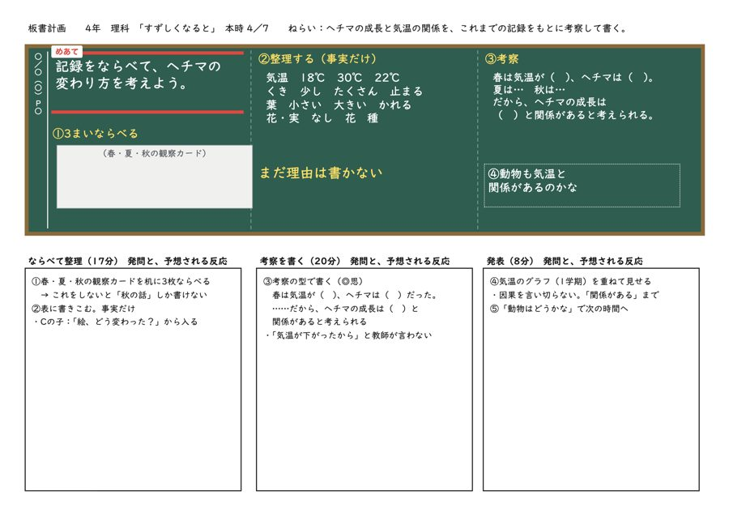
板書計画（全7時）（PDF）A4よこ。黒板と、発問と予想される反応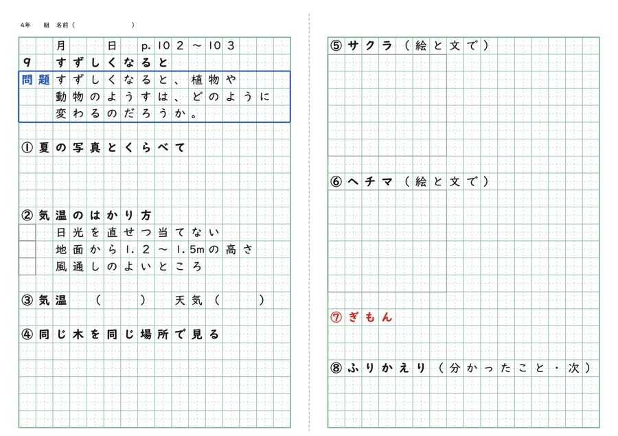
ノート 配る紙（全7時）（PDF）B4よこ＝5mm方眼ノートの見開き。題名・問題・めあて・問いだけ刷ってあります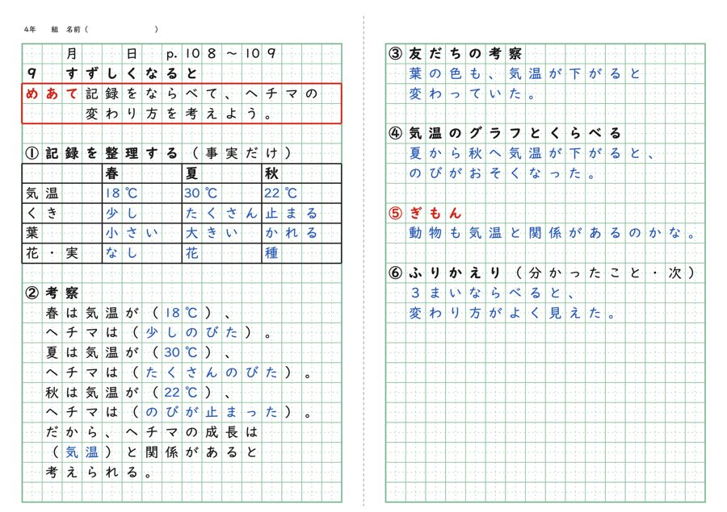
ノート 記入例（全7時）（PDF）配る紙に、子どもの答えの例を青で入れたもの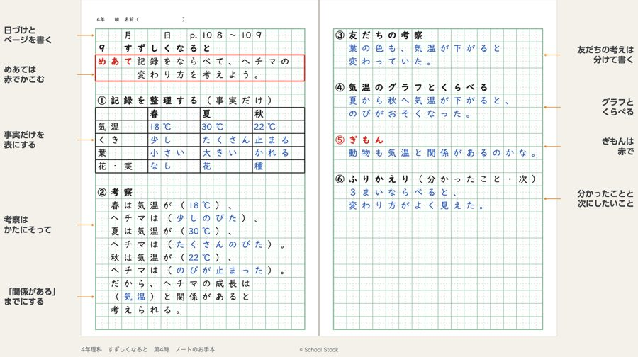
ノートのお手本（全7時）（PDF）記入例のまわりに、書き方のこつを矢印で書きそえたもの。A4よこノートのお手本（書き方のこつつき）
記入例のまわりに、書き方のこつを書きそえました。理科のノートは、問題、観察、結果（見たことだけ）、考察、まとめ、ぎもんの順に書きます。結果は表にして、まだ理由は書きません。考察は「春は気温が（ ）、ヘチマは（ ）」のような型にそって書きます。終わりに「ふりかえり」の欄があり、分かったことと次にしたいことを書きます。ノートは書いたあとに見直すと力になる、という研究が多いためです。授業のはじめに映して、書き方をそろえるときに使えます。
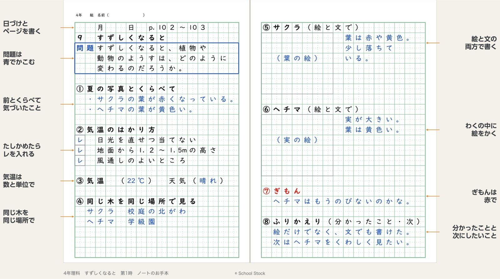
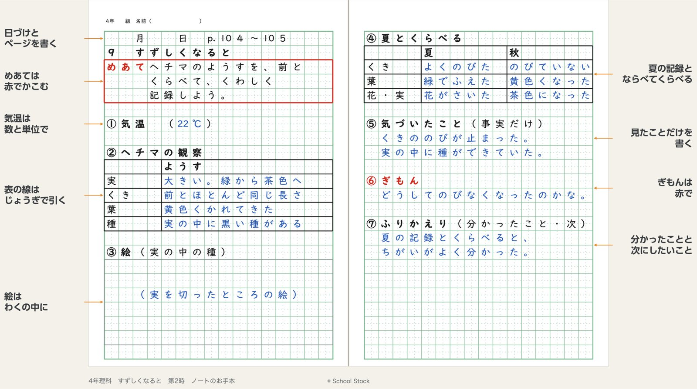
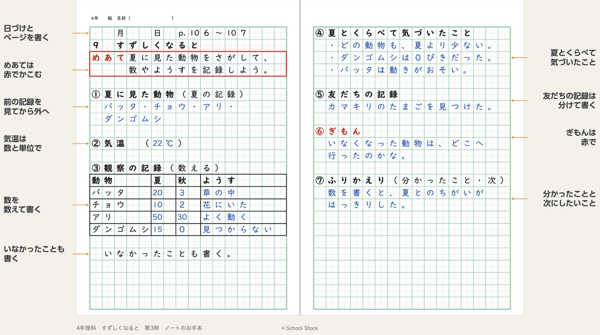
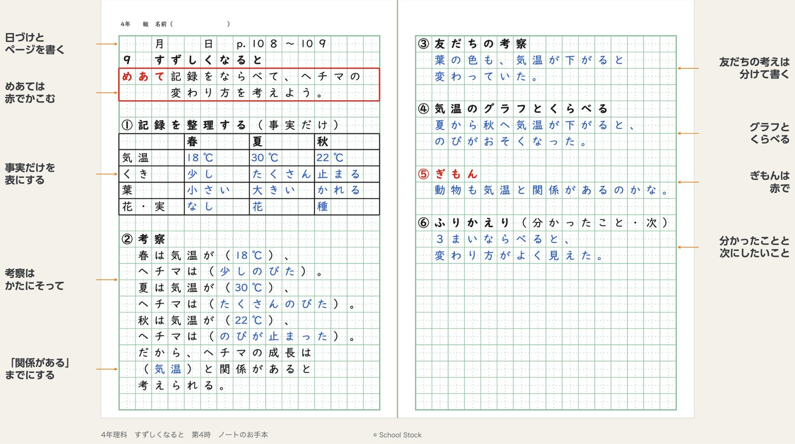
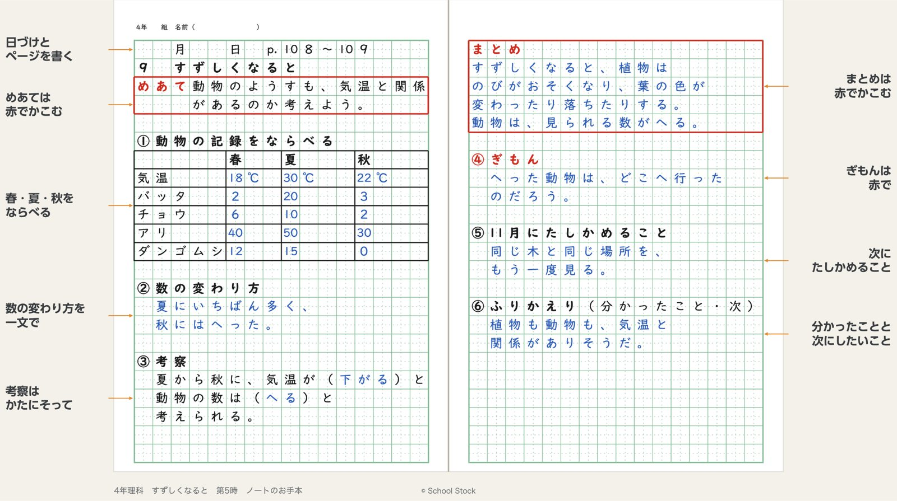
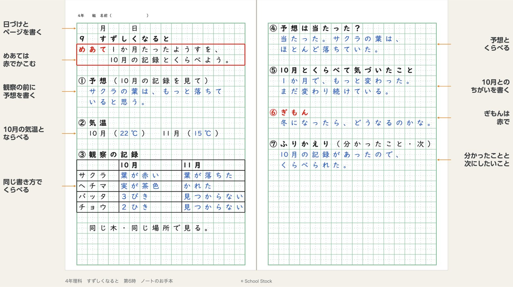
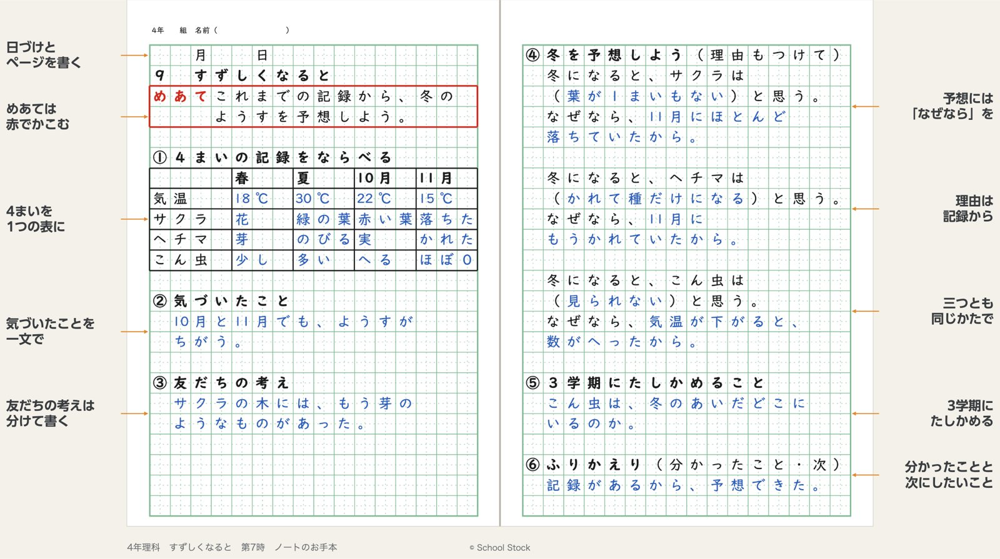
授業計画
授業計画（全7時間）に、単元の目標、評価、毎時間の流れ、つまずきと手立て、準備物をのせています。
作り方
書き方のこつは、ノート指導の公的資料と研究（ノートは見直すと効き目が大きい、自分の考えと友だちの考えを分ける、など）から選びました。
板書計画とノートは、自作の道具「マス目プリントメーカー」で作りました。字はマスに1字ずつ入り、数字は5mmに1字です。記入例の気温や動物の数は自作の例なので、学級の記録に合わせて直して使ってください。授業の日付や学級の情報は外してあります。